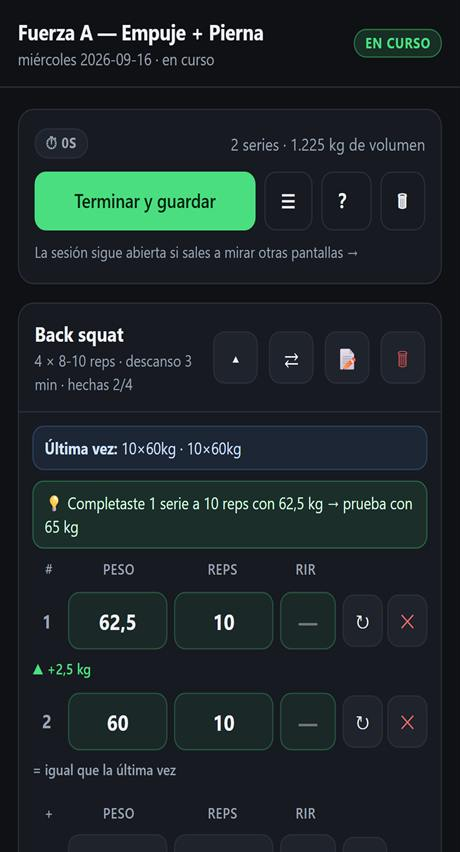
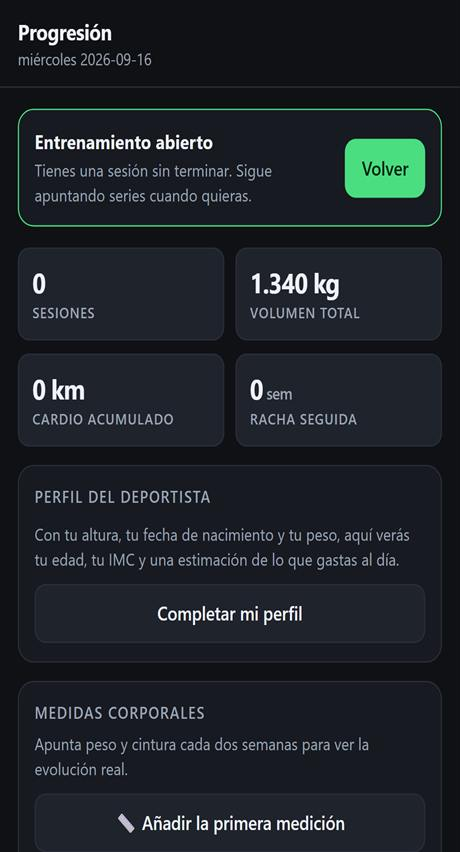
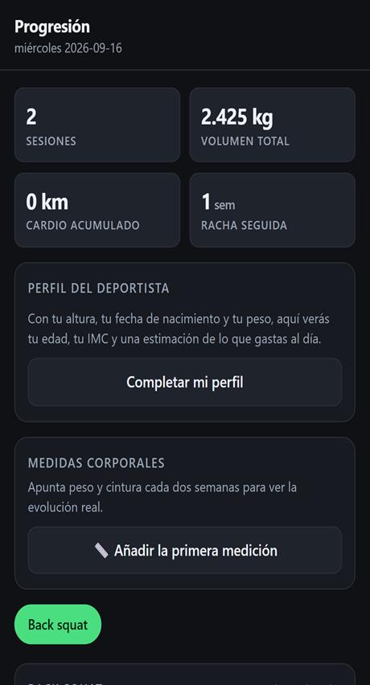
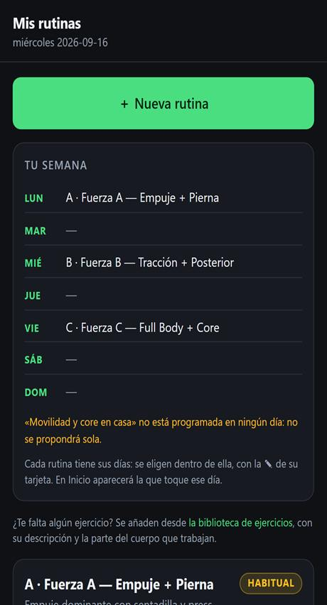
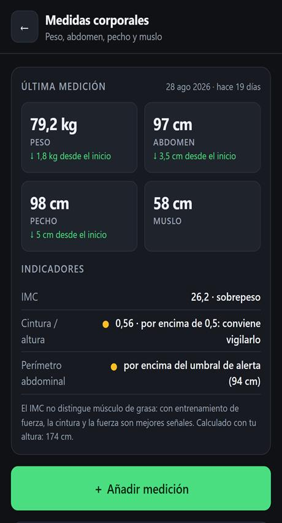
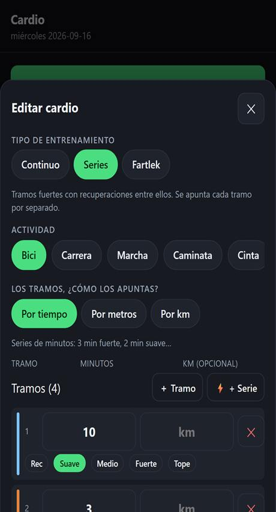
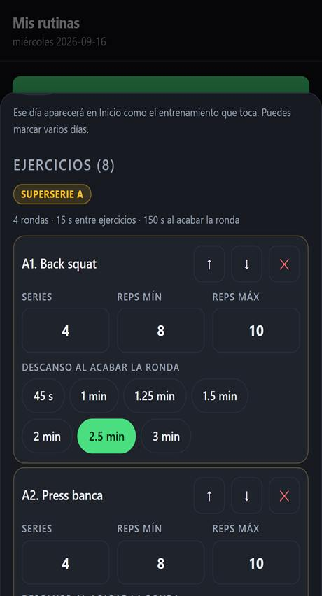
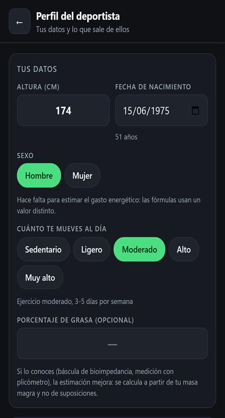

Nada que registrar
Sin cuenta, sin correo, sin contraseña. Abres la app y empiezas. Tampoco se pide ningún dato personal para usarla.
Registro de entrenamiento · Sin conexión · Gratis
Apunta lo que levantas, cuánto descansas y cómo vas semana a semana. Kairós funciona sin conexión y guarda todo en tu propio móvil: sin registrarte, sin cuentas y sin que tus datos salgan de casa.
Si no aparece el aviso, tranquilidad: se instala igual desde el menú del navegador. Míralo aquí abajo.
¿Cuánto levantaste en sentadilla el martes pasado? ¿Tres series o cuatro? La memoria engaña, y el móvil tampoco ayuda: entre desbloquear, buscar la nota, escribir con el teclado pequeño y que se apague la pantalla, se te va el descanso.
La alternativa de siempre es el papel, pero en el gimnasio se moja, se pierde y no te dice si has mejorado. Y las apps «completas» piden cuenta, conexión y una cuota.
Kairós es lo contrario: abres, apuntas y sigues. Y si algún día quieres mirar atrás, ahí está todo lo que has hecho.
Todo lo que sigue está en la app de verdad, no es una lista de deseos. Si algo tiene un límite, también se dice: mira el apartado de la letra pequeña.
Escribes peso y repeticiones, tocas el ✓ y ya está.
Al guardar la serie empieza a contar con el descanso de ese ejercicio.
Tocas ⇄ y sigues con otro, sin perder lo que ya habías apuntado.
Compara con la misma serie de la sesión anterior.
Capturas de la app tal cual, con un entrenamiento de ejemplo. Nada de maquetas bonitas que después no existen.
Qué toca hoy, lo que llevas esta semana y los avisos de copia y medidas.
Cada ejercicio con sus series, y cada serie diciéndote si has subido peso.

Cronómetro grande, +30 s si te hace falta, y aviso sonoro al terminar.

Volumen por sesión, kilómetros de cardio y racha de semanas seguidas.

Series por semana y por grupo, para ver si alguno se queda atrás.

Cada rutina en su día, y un aviso si el reparto no cuadra.

Peso y cintura cada 14 días, que es lo que de verdad se mueve.

Continuo, por series o fartlek, en tiempo, metros o kilómetros.

Enlaza dos o tres ejercicios: la app ajusta los descansos sola.

Edad, IMC y una estimación de lo que gastas al día, marcada como estimación.
No se descarga de ninguna tienda de aplicaciones: se abre en el navegador y se añade a la pantalla de inicio. Queda como una app normal, con su icono, a pantalla completa.
Si te sale el botón Instalar en el móvil en esta misma página, es un atajo: hace lo mismo que los tres pasos.
Dos límites que conviene saber antes: en iPhone el sonido del aviso de descanso no está garantizado (por eso la barra parpadea en verde), y la copia automática a una carpeta no existe. En iPhone la copia se descarga como archivo.
No hay servidor, no hay nube y no hay empresa detrás: la app la ha hecho una persona. Lo que apuntas no sale de tu teléfono, y nadie más puede verlo.
Sin cuenta, sin correo, sin contraseña. Abres la app y empiezas. Tampoco se pide ningún dato personal para usarla.
En muchos gimnasios no hay señal, y da igual: una vez instalada se abre y se apunta todo aunque el móvil esté sin datos.
Como todo está solo en tu móvil, si borras los datos del navegador o desinstalas la app, se pierden. Kairós te lo recuerda y te lo pone fácil.
Descargar el archivo y guardarlo donde quieras, o elegir una carpeta del móvil (Android) para que la app guarde una copia sola cada cierto tiempo. Cambiar de móvil es importar ese archivo.
Preferimos decirlo antes que dejarte con la duda. Ninguna de estas cosas está en la app, y no queremos que las esperes:
Estas respuestas son las mismas que da la app por dentro, así que no pueden contradecirse.
No. No hay cuentas, ni registro, ni contraseña: abres y ya está.
En tu móvil y solo en tu móvil. No hay servidor, así que nadie más puede verlos.
Nada. No hay versión de pago, ni anuncios, ni suscripción.
¿Te falta una pregunta? Mírala dentro de la app, en Ajustes → Ayuda: hay 25 respuestas buscables.
Ábrela en este móvil, añádela a la pantalla de inicio y el próximo día de entreno ya tendrás la libreta lista.